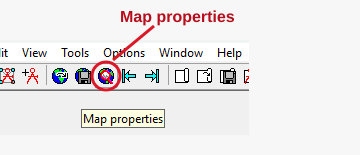
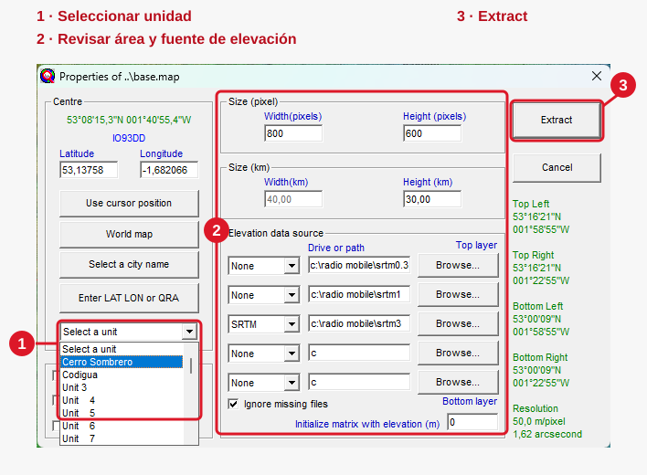

Capítulo 02 · Módulo 02
Corregir la elevación del terreno.
Extraer el mapa y volver a pegar los sitios para comprobar sus elevaciones.
Abrir las propiedades del mapa
Después de pegar los sitios, abre Map properties con el icono señalado. También puedes encontrar esta ventana desde el menú File → Map properties.

- Selecciona una unidad: en el desplegable Select a unit, elige Cerro Sombrero o Codigua para centrar el mapa en uno de los sitios del enlace. Recuerda cuál elegiste: será el primero que volverás a pegar después de extraer.
- Revisa el área y la fuente de elevación: el mapa debe cubrir ambos extremos y disponer de datos de terreno para esa ubicación. La captura muestra SRTM como una de las fuentes configuradas; las rutas pertenecen a esa instalación.
- Pulsa Extract: extrae el terreno del área seleccionada y deja que termine el proceso. Comprueba que el mapa corresponde al tramo de Chile y cierra la ventana para volver a pegar los marcadores.

Volver a pegar después de Extract
Tras terminar la extracción y cerrar Map properties, repite el copiado desde Google Earth Pro y el pegado en Units properties para cada sitio. En el procedimiento del taller, empieza por la misma unidad que seleccionaste para extraer el mapa.
- Primero, el sitio seleccionado en Extract: si elegiste Cerro Sombrero, vuelve a copiar su marcador en Google Earth Pro; selecciona Cerro Sombrero en Units properties y pulsa Paste. Si elegiste Codigua, comienza con Codigua.
- Después, el otro extremo: copia su marcador en Google Earth Pro, selecciona su unidad correspondiente en Radio Mobile y pulsa Paste.
- Comprueba ambos sitios: revisa que cada unidad conserve su nombre, sus coordenadas y la elevación del terreno cargado. Guarda los cambios con OK.
Separar los tres datos
| Dato | Cómo lo interpretamos |
|---|---|
| Marcador base de Earth Pro | 0 m en modo Relativa al suelo: identifica el sitio sobre el terreno. |
| Elevation de la unidad | Elevación del terreno cargado para esa ubicación. Se comprueba después de extraer y volver a pegar. |
| Altura de antena | 15 m sobre el terreno en el escenario elegido. Se configura aparte; no reemplaza Elevation. |
La captura con la elevación inicial en cero corresponde al estado anterior. Las elevaciones resultantes del caso se incorporarán cuando tengamos la captura posterior a este procedimiento; no se completarán por suposición.
Si la elevación sigue en cero o falta terreno, revisa las coordenadas, el área y la fuente de elevación antes de pasar a Parámetros. El mapa debe cubrir ambos extremos del enlace.